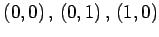

Inhalt Index DeskTop Bronstein

 Funktionentheorie Funktionen einer komplexen Veränderlichen Konforme Abbildung
Funktionentheorie Funktionen einer komplexen Veränderlichen Konforme Abbildung


In diesem Abschnitt werden neben den Transformationen und ihren wichtigsten Eigenschaften die Kurvenbilder isometrischer Netze der z-Ebene angegeben, d.h. solcher Netze, die in ein orthogonales kartesisches Netz der w-Ebene übergehen. Dabei sind die Ränder solcher z-Gebiete durch Schraffur gekennzeichnet, die auf die obere Hälfte der w-Ebene abgebildet werden. Schwarz dargestellte Gebiete gehen durch die konforme Abbildung in ein Quadrat der w-Ebene mit den Koordinateneckpunkten  und (1,1) über (s. Abbildung).